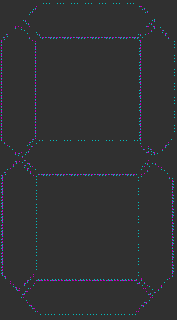
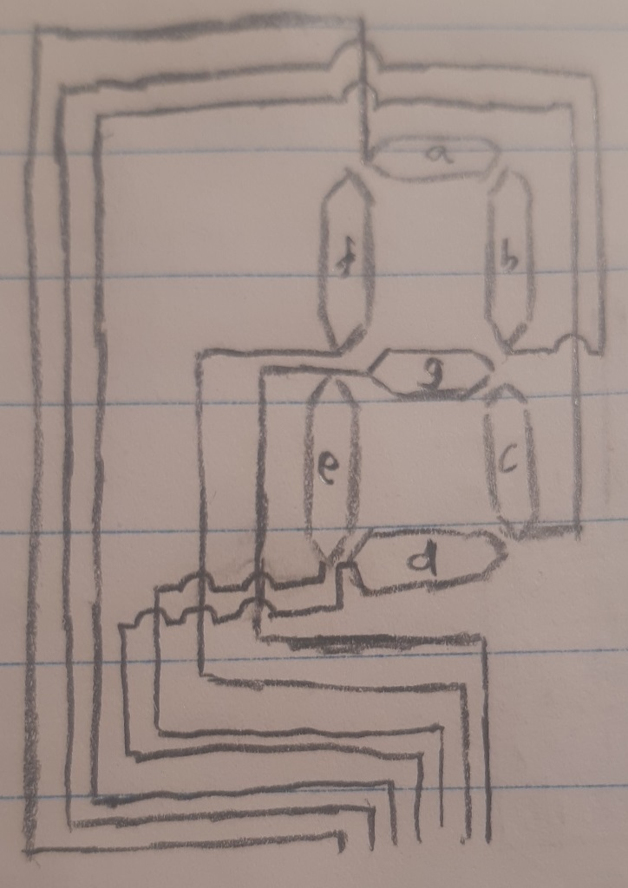
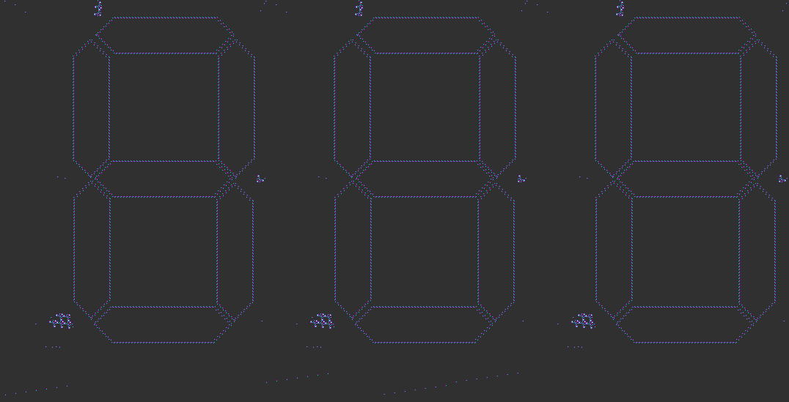

Let's begin with designing just one of the 7 segments to begin with.
This segment takes about an eighth of a cycle to fill out, or empty itself.
I judge this would be enough time to be able to make out what number is displayed at a given time.

Looking like something, eh?
Now onto tying it up with the 7 inputs from our reader.

and in Golly
Then it's just 3 of these in a row

The read signals from state 255, overlaps with state 0 and a fraction of state 1. So I extended the clock cycle time, by moving one of the columns back 500 pixels.
The clock cycle is only this long because the byte state has to reach the bottom, turn on the very last Identity Comparator, and send the read signal all the way up again;
all before the Identity comparator for state 0, gets its signal (almost instantly) and sends its read signal up (also almost instantly).
With the 500 pixel gap, the number 0, is displayed incorrectly about as long as it is displayed correctly.
You can make the clock cycle longer to cancel out the wrong display completely if you wish, but of course the counter will act more slowly like that